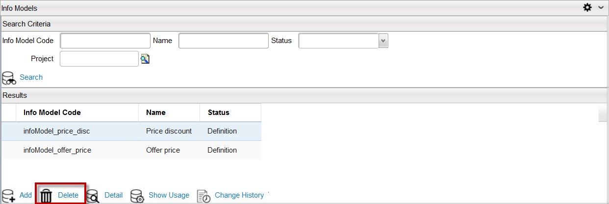

Delete an Info Model
To delete an info model, follow these steps:
Note: A project must be opened to delete an info model.
- In Catalog Designer application, navigate to Designer > Info Models menu.
- The Info Models Search Criteria dialog appears; search for an info model.
- Select an info model from the result list (for example, infomodel_price_disc), in the Results pane.
- Click the Delete button located at the bottom of the dialog.

- A confirmation dialog appears; select the Yes button.
- The selected info model is deleted from the project.
Note: You cannot delete an info model that has its Status field set to Active.
|